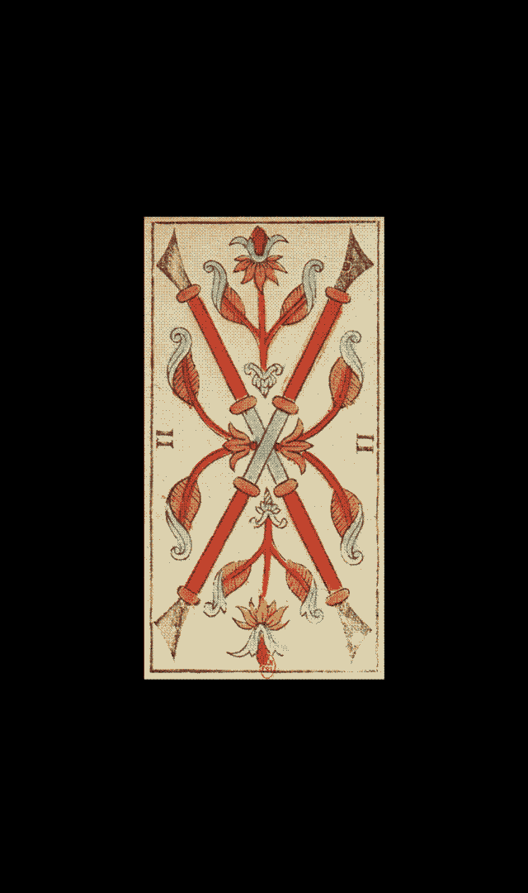
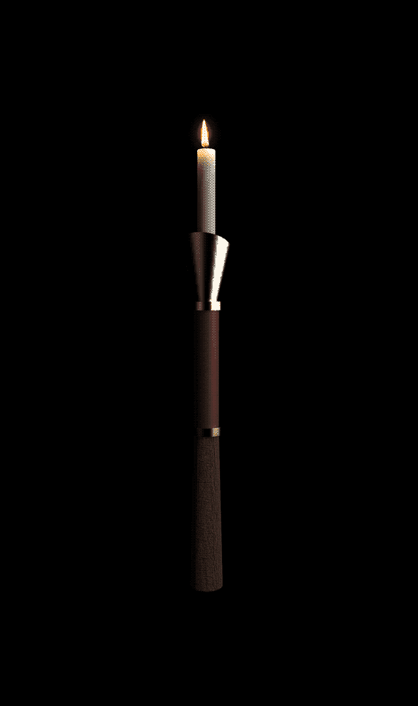
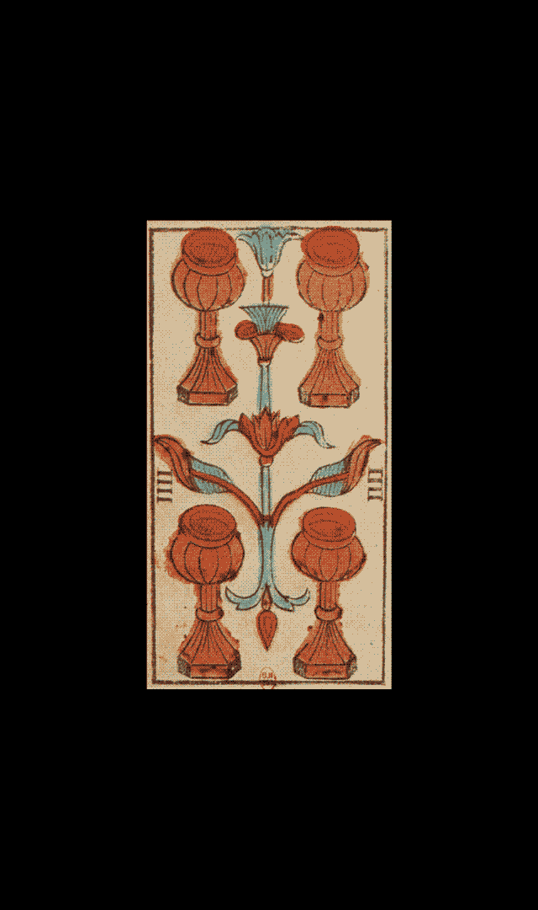
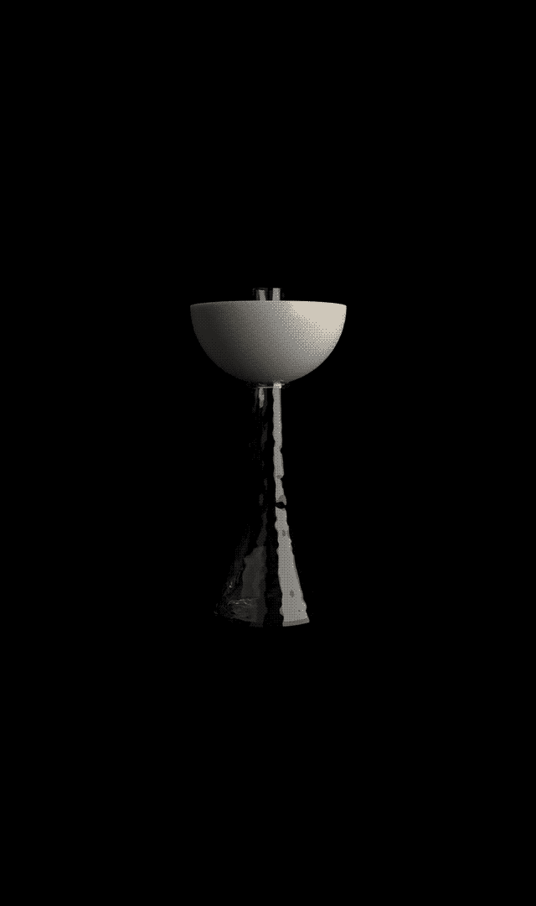
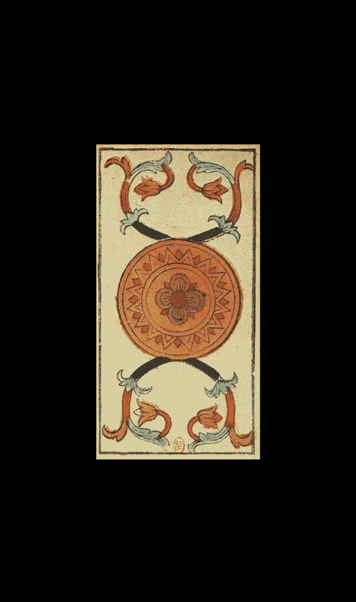
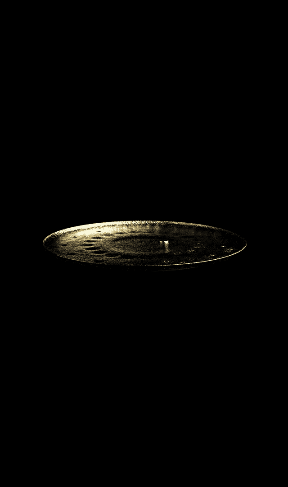
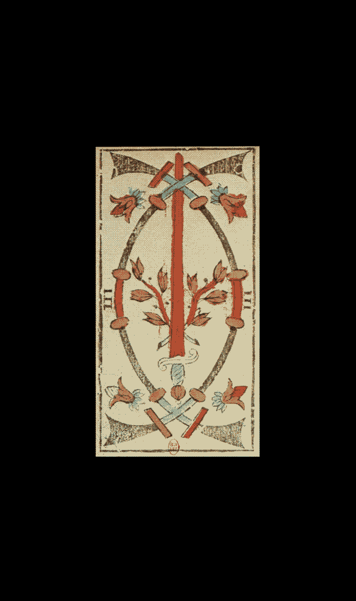
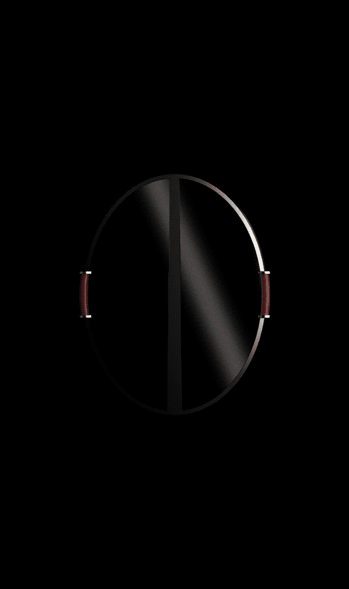

Enseignements
2020
Projet personnel
Le tarot divinatoire, ou tarot de Marseilles, utilise pour ses arcanes mineures les enseignes latines du jeu de cartes. Celles-ci comprennent (à la place des carreaux, piques, cœurs et trèfles) les bâtons, coupes, deniers et épées. Leurs dessins dans le jeu de Nicolas Conver de 1761 m'ont intrigués de part leur forte symbolique. J'ai ainsi conçu 4 objets s'en inspirant. Un chandelier pour le bâton, un vase pour la coupe, un plateau pour les deniers et un miroir pour l'épée.



Bâton
Mon travail a été de concevoir des Totems permettant des cultures hors-sol de choux et matérialisant la prise d’espace. Ces Totems sont fait en éléments de récupération et servent de pôles pour certaines activités de la lutte (fabrication d’affiches et tracts par gaufrage, rangement de combinaisons de jardiniers, production d’électricité).


Coupe
Mon travail a été de concevoir des Totems permettant des cultures hors-sol de choux et matérialisant la prise d’espace. Ces Totems sont fait en éléments de récupération et servent de pôles pour certaines activités de la lutte (fabrication d’affiches et tracts par gaufrage, rangement de combinaisons de jardiniers, production d’électricité).


Deniers
Mon travail a été de concevoir des Totems permettant des cultures hors-sol de choux et matérialisant la prise d’espace. Ces Totems sont fait en éléments de récupération et servent de pôles pour certaines activités de la lutte (fabrication d’affiches et tracts par gaufrage, rangement de combinaisons de jardiniers, production d’électricité).


Épée
Mon travail a été de concevoir des Totems permettant des cultures hors-sol de choux et matérialisant la prise d’espace. Ces Totems sont fait en éléments de récupération et servent de pôles pour certaines activités de la lutte (fabrication d’affiches et tracts par gaufrage, rangement de combinaisons de jardiniers, production d’électricité).
contact
ah!
en